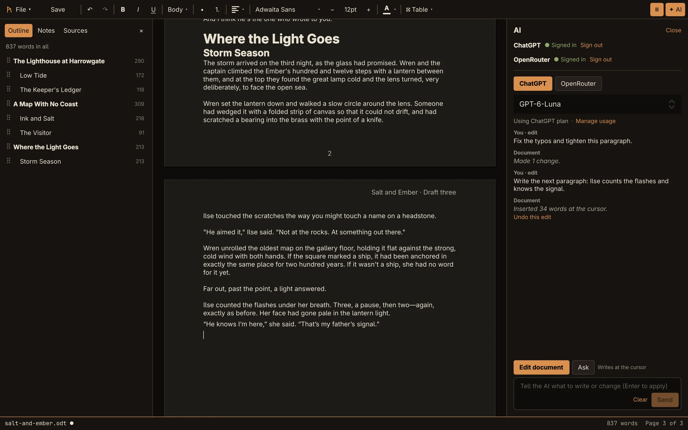
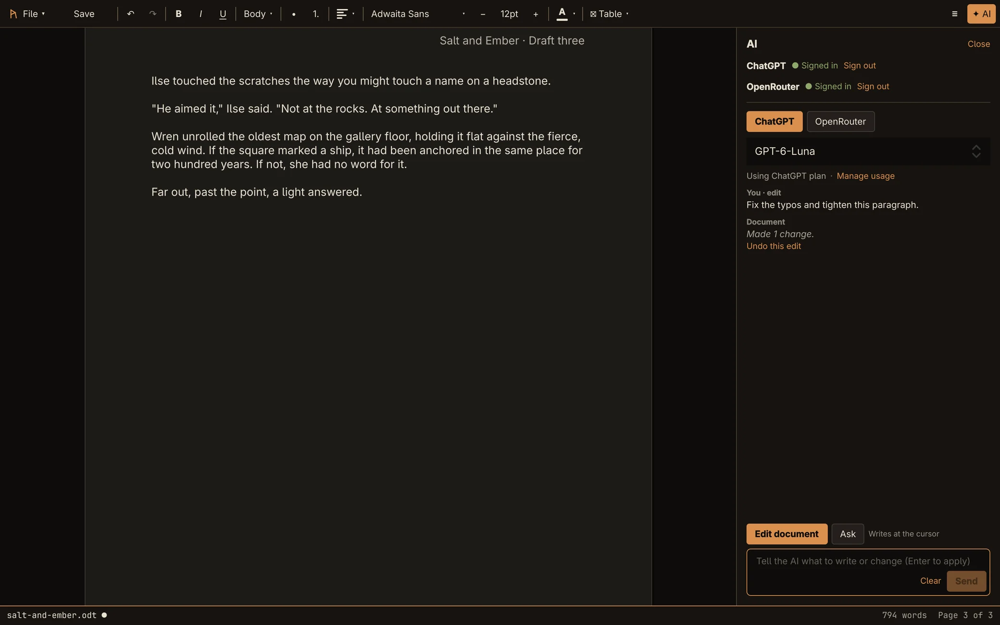
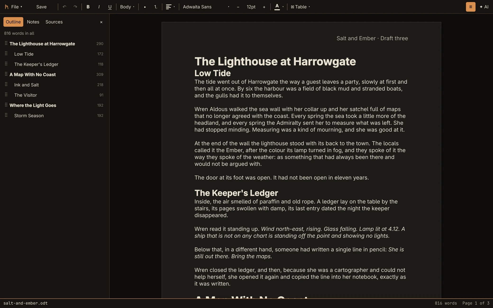
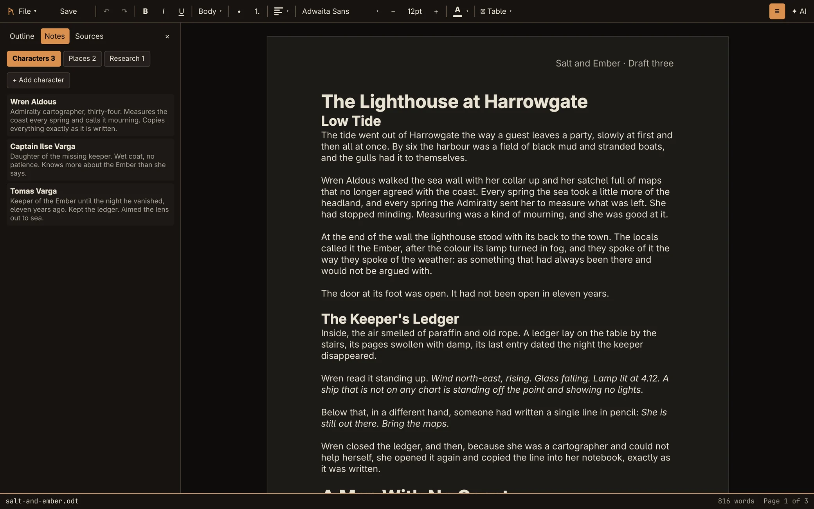
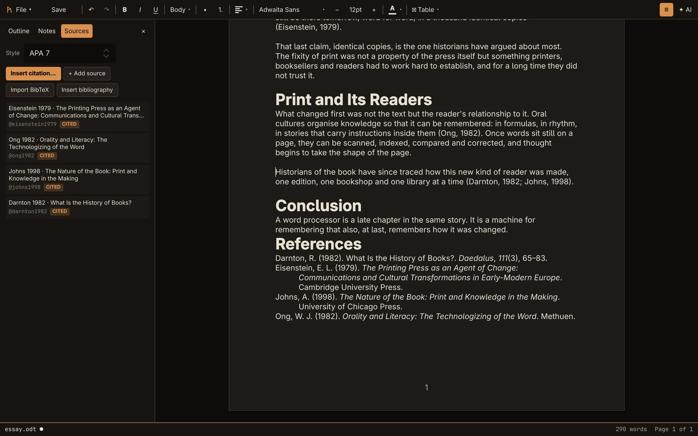
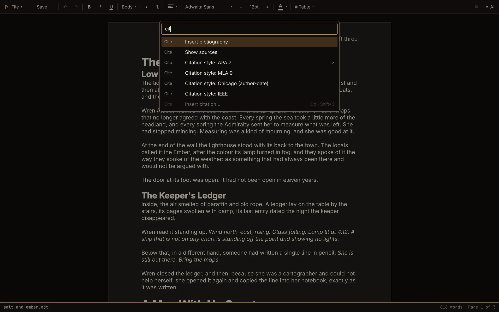
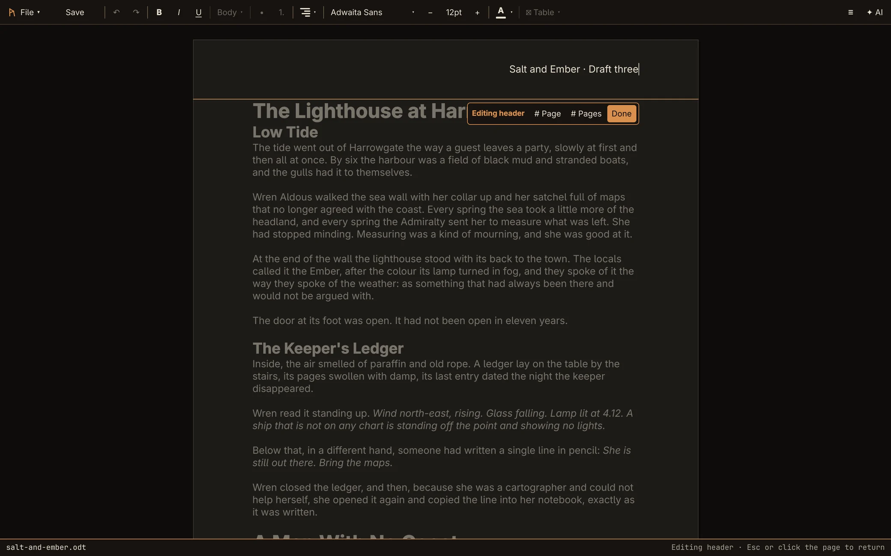

Real .odt, .docx, and .doc. Your ChatGPT plan — or Claude, GPT, and Grok through OpenRouter — writing straight into the document, not a chat window bolted onto a twenty-year-old codebase.

A manuscript in Rune: the outline on the left, the AI on the right. Both of its edits are in the page, each one undo step.
Recorded from the real app. The AI's edits are live responses from ChatGPT, not a mock-up.
Step-by-step instructions for all of this are in the guide.

Select a passage and say what you want, or put the cursor where the text should go. Corrections land in place, so your formatting survives; new text streams in at the cursor. Every AI edit is one undo step.
Or switch to Ask and question the document. Ctrl+Shift+E opens the panel ready to edit.

Chapters are headings and scenes are subheadings. The outline lists them with their word counts. Click one to go there, or drag it by its handle to move the whole chapter, scenes and all, as one undo step.

Characters, places and research are saved inside the document, in .odt and .docx alike. The AI reads them, so it knows who your characters are, and it can update them as the story changes.

Add sources in a form or paste BibTeX, then cite as you write with Ctrl+Shift+C, in APA 7, MLA 9, Chicago author-date or IEEE. Switch styles and every citation follows. The bibliography updates itself.
The AI cites your sources too. A source it adds is flagged for you to check, and its DOI or link is tested.

Press Ctrl+K and type. Every command is there with its shortcut, from page setup and page numbers to citation styles and the AI panel. The ones that don't apply right now are dimmed.

Letter or A4 to match your locale, margins and orientation in Page setup, and headers and footers edited in place with page number and page count fields. They come through to Word and LibreOffice in the same place.
Every other word processor on Linux treats AI as an afterthought — a sidebar chat window stapled onto software that was finished before large language models existed. Rune starts from the opposite premise. The model is a writing primitive, on the same level as bold, italic, and paste.
Highlight a paragraph and ask Claude to tighten it. Place your cursor and have GPT draft the next section. Ask it to fix the spelling and it corrects the page in place, keeping your formatting. Every AI edit lands as a single undo step, so taking it back is one Ctrl+Z. This is the actual point of the project — everything else is table stakes.
Sign in with the ChatGPT plan you already pay for, or with OpenRouter to use Claude, GPT, and Grok on your own credits. Rune has no server and no account of its own: requests go straight from your machine to your provider, and sign-in secrets live in your desktop keyring.
Why no direct Claude or Grok sign-in? Anthropic's terms don't allow third-party apps to offer Claude.ai login, and xAI has no sign-in program for other apps. Rune uses only the sanctioned routes.
Rune's native format is ODF — open, documented, and the thing Rune's own engine understands directly. Word documents are supported too, but as a conversion at the boundary: open a .docx and Rune converts it once; save as .docx and it converts back. Your working format while you edit is never locked to a proprietary spec.
The engineering budget goes into the editing experience and the AI integration, not into chasing Word-format compatibility as the product's center of gravity.
Rune is a single process built directly on Qt's text engine — no tiled bitmap rendering, no inter-process protocol, no serialization standing between your keystroke and the screen. Real incremental text layout, the way a native app should feel.
Built for Omarchy's keyboard-first, minimal aesthetic.
Built directly on Qt's QTextDocument — no bitmap tiles, no IPC, no serialization. ODF is the native format; Word documents are a one-shot conversion at the boundary, not the live model. The AI layer lives in the same process and edits the same document object you type into.
487 automated checks run headlessly, including both AI sign-in flows against local mock servers. Rune started as a two-process LibreOfficeKit design — kept for reference at legacy-lok/. Full rationale for the switch, and every bug found along the way with evidence: README.md
Rune 0.8.6. Core editing, pages, author tooling and citations work end to end. The AI writes into your document directly: corrections in place, rewrites of a selection, drafts at the cursor, each as one undo step. Some everyday features are still missing, listed below.
| Area | State |
|---|---|
| Document I/O (.odt native, .docx/.doc via bridge) | Working |
| Text editing — keyboard, mouse, clipboard | Working |
| Formatting, styles (incl. inherited), lists, tables | Working |
| Async .docx conversion — doesn't block the UI | Working |
| Open / Save As dialogs, unsaved-changes prompt, word-by-word undo | Working |
| AI sign-in: your ChatGPT plan, or OpenRouter (Claude, GPT, Grok) | Working |
| AI in the document: corrections in place, rewrite selection, draft at cursor; ask about the document | Working |
| Pages, Page setup, headers and footers with page numbers | Working |
| Command palette (Ctrl+K) | Working |
| Outline with word counts and drag-to-move chapters; story notes in the file | Working |
| Citations (APA, MLA, Chicago, IEEE), BibTeX import, live bibliography | Working |
| AI formatting changes by instruction ("bold the names") | Not started |
| Images, section breaks, table of contents | Not started |
| Find and replace, spell check | Not started |
Problems found along the way are documented with the evidence, not hidden — Qt's ODF writer silently dropping a table placed directly after a list, heading levels and nested tables — fixed by writing ODF ourselves. See the full roadmap for the complete, current picture.
Packages for Arch / Omarchy, Debian 13 and Fedora 42 are on every GitHub release. Install LibreOffice Writer too if you want to open and save .docx and .doc.
autonomix-cli picks the right package for your system and keeps Rune updated from GitHub Releases.
Download the package for your distro from the latest release, then:
One file with its own Qt, for x86_64 distros with glibc 2.34 or newer: Ubuntu 22.04, Debian 12, Fedora 39 and newer. Download rune-0.8.6-x86_64.AppImage from the latest release, then:
Or let Gear Lever or AppImageLauncher add it to your menu and keep it updated.
Arch / Omarchy: everything is in the official repos. LibreOffice is only needed for .docx/.doc.